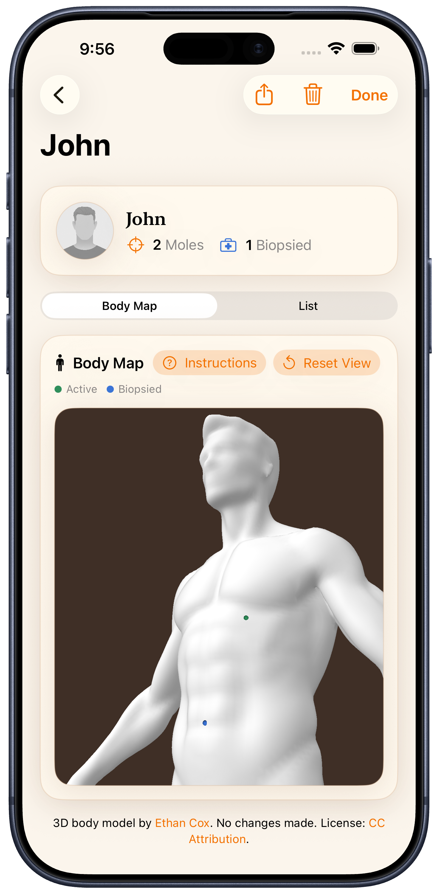
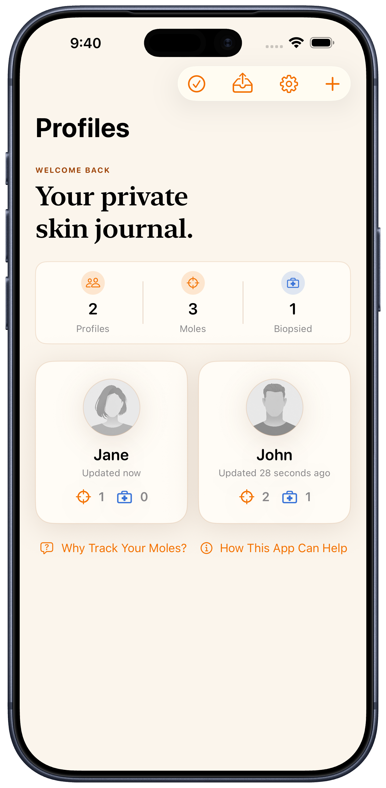
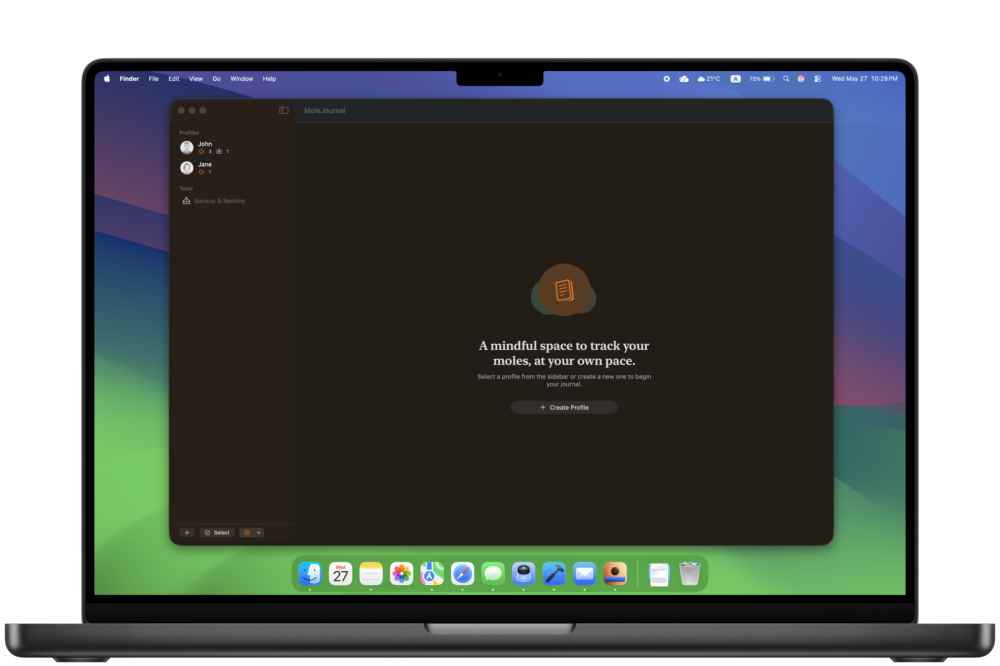

Put every mole exactly where it is
Place markers on an interactive 3D body model instead of guessing from flat diagrams or memory. Active and biopsied moles are colour-coded at a glance, on a map that's yours alone.
Independent software studio · Texas
Orange Forge AI builds focused, private apps that keep your data on your own device — starting with MoleJournal, a calm home for your skin records.
No accounts · No cloud · Your records never leave your device


The flagship
Record moles on a 3D body model, attach dated photos and measurements, and keep a clear timeline for every spot. Everything stays on your device.

Place markers on an interactive 3D body model instead of guessing from flat diagrams or memory. Active and biopsied moles are colour-coded at a glance, on a map that's yours alone.
Records and photos are stored locally. No account, no cloud sync, nothing sent to a server.
Keep dated photos, measurements, and notes together so each spot's history is easy to review.
Keep separate profiles for yourself or family recordkeeping, each with its own body map.
Export a backup file whenever you want an extra copy — you choose where it's saved.
Use MoleJournal straight away — there's nothing to sign up for and nothing synced you didn't ask for.
Try it
This is how MoleJournal thinks about location — not a list, but a body you can point to.
Hover or tap a marker to see its record. Click anywhere on the body to drop a new one. You've mapped 3 so far.
One journal, every screen
The same private journal, designed to feel at home on each device — your records sync only through backups you make yourself.



The studio
Orange Forge AI is a small, independent studio in Texas. We build a few focused apps and finish them with care — the way good tools used to be made.
Our principle is simple: your data is yours. Our apps work without accounts, keep your information on your device, and let you take a backup whenever you like. No tracking, no ads, no cloud you didn't ask for.
Get started
Keep mole photos, measurements, notes, and body locations organised in one calm, on-device app. No account required.